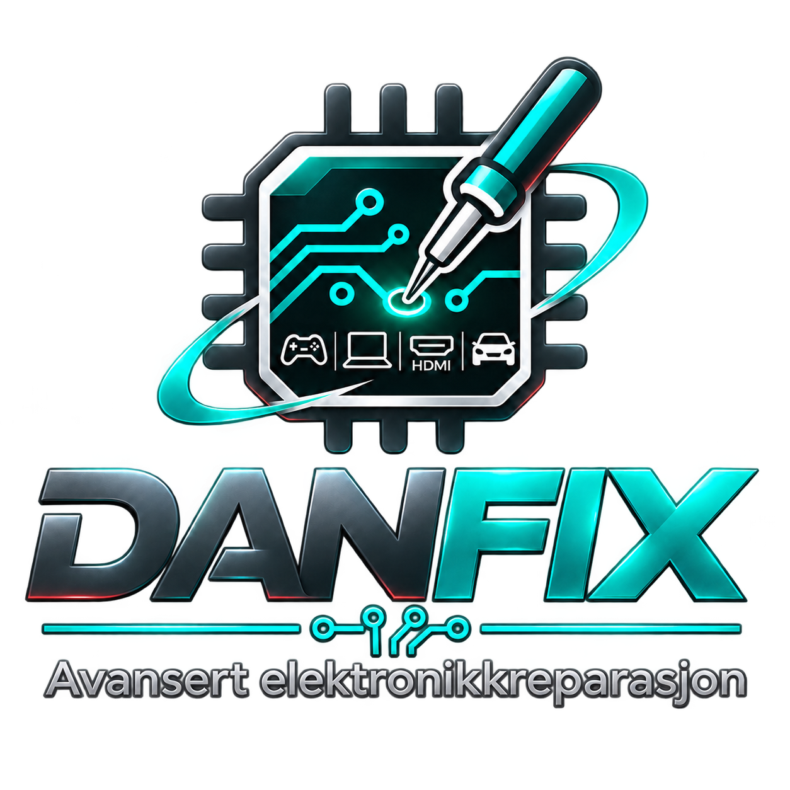

Spillkonsoller
PlayStation, Xbox og Nintendo. HDMI-porter, USB-kontakter, strømproblemer og feilsøking på hovedkort.
Presisjonsarbeid på kretskort. HDMI-kontakter, spillkonsoller, bærbare PC-er og bilelektronikk – med fokus på feilsøking og reparasjon fremfor utskifting.

Hver reparasjon starter med å forstå årsaken til feilen. Vi viser hva slags arbeid verkstedet er planlagt for – konkrete tjenester bekreftes ved vurdering av enheten.
PlayStation, Xbox og Nintendo. HDMI-porter, USB-kontakter, strømproblemer og feilsøking på hovedkort.
.jpg)


-USB-C_port_PNr%C2%B00760.jpg)
Skjermbytte, ladeporter, skadde kontakter, kretskort og strømforsyning.


Elektronikk skadet av fukt eller korrosjon, instrumentpaneler, radioer og elektroniske moduler.


Presisjonslodding under mikroskop, SMD-komponenter, ødelagte loddepunkter og reparasjon av PCB-baner.
.jpg)


Utskifting av skjermmoduler, porter og andre fysisk skadde komponenter – etter modell og tilstand.


.jpg)

Systematisk diagnose av feil på kretskort, måling av spenningslinjer og vurdering av reparasjonsmuligheter.


Presis utskifting av skadde video-, lade- og datakontakter med kontroll av loddepunkter og signalforbindelser.


Feilsøking og komponentreparasjon i småelektronikk, strømforsyninger, elektroniske moduler og spesialutstyr.
Illustrasjonsbilder fra Wikimedia Commons. Klikk et bilde for originalkilde, opphavsperson og lisens. Bildene viser ikke dokumenterte reparasjoner utført av DANFIX.
Ikke bare bytte hele hovedkort – undersøk først om komponentene kan repareres.
Oppgi modell, symptomer og eventuell skadehistorikk.
Vi avklarer om enheten kan undersøkes og hvordan den kan leveres.
Pris og videre fremgangsmåte avklares før betalt arbeid.
Utført arbeid testes før enheten overleveres eller sendes tilbake.
Dette er en forhåndsvisning av skjemaet. I denne versjonen kan du åpne en e-postkladd med informasjonen. Ingen opplysninger lagres på nettstedet.
Senere får DANFIX et sikkert kundesystem med bilder, saksnummer, status og varslinger. Dette settes ikke i drift før personvern og lagring er konfigurert.
DANFIX er en ny verkstedprofil utviklet av Tomasz Danielski, med fokus på praktisk feilsøking, presisjonslodding under mikroskop og reparasjon av elektroniske komponenter. Nettsiden er under utvikling og publiseres først når kontaktinformasjon og mottak av oppdrag er klare.
Planlagt kontakt: serwis@danfix.no · E-postadressen er ennå ikke aktivert.